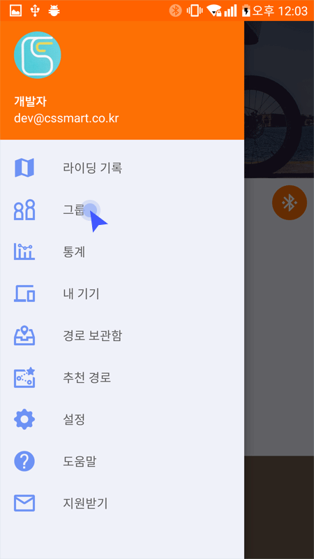
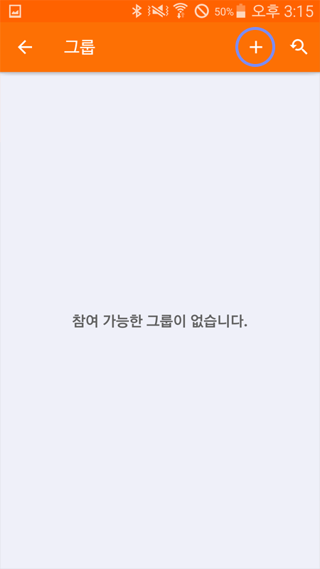
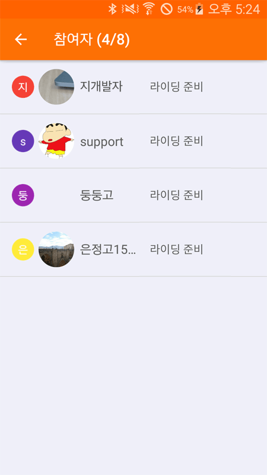

07. 그룹 라이딩
7.1 그룹 라이딩이란
* 그룹라이딩은 여러사람이 함께 라이딩 할 때 사용하는 기능입니다. 아는 사람들이 모여 사용한다는 전제 하에 비밀번호를 사전에 공유하고 사용합니다.
* 한번에 하나의 그룹에만 참여할 수 있습니다. 타 그룹 참여시 현재 참여한 그룹을 나가기 한 후 참여 가능합니다.
* 그룹라이딩과 일반라이딩 기능을 동시에 사용할 수 없습니다. 그룹에 참여한 후에는 그룹라이딩이 기본으로 사용되며 그룹에서 나가기 한 이후에는 일반라이딩이 기본으로 사용됩니다.
7.2 그룹 생성
‘그룹’을 클릭하여 그룹라이딩 목록으로 이동합니다.
원하는 그룹이 없거나 본인이 리더가 되어 그룹을 만들고자 할때 우측 상단의 + 버튼을 눌러 그룹을 추가할 수 있습니다.
- 제목 : 라이딩 제목을 설정합니다.
- 내용: 라이딩에 관한 내용을 기입합니다. 날짜나 목적지 참여 요구사항 등. 필요에 따라 비밀번호를 공개하여 모르는 사람들과 라이딩을 함께 할 수도 있습니다.
- 출발지/목적지 : 우측의 위치 아이콘을 눌러 지도에서 줄발지와 목적지를 지정합니다.
- 호출팝업 : 위급사항 발생시 호출하기 버튼을 눌렀을때 알림창을 멤버 전원에게
보일지 그룹개설자에게만 보일지 선택합니다.
- 비밀번호 : 그룹에 참여하고자 할때 입력하는 비밀번호를 설정합니다.
모든 입력이 끝나면 우측 상단의확인 버튼을 눌러 그룹추가를 완료합니다.
내가 생성한 그룹 화면에서 우측 상단의 추가기능 버튼으로 작성한 내용을 수정하거나 그룹을 종료할수 있습니다.
7.3 그룹 참여
‘그룹’을 클릭하여 그룹라이딩 목록으로 이동합니다.
그룹라이딩 목록이 나타나면 그룹정보를 확인할수 있습니다. (그룹리더,생성날짜, 출발지,목적지, 라이딩 날짜 등)
그룹정보 화면에서 우측 상단에 참여 버튼을 눌러 그룹에 참여할수 있습니다. 이때 리더가 생성한 비밀번호를 입력해야 참여가 가능합니다.
* 그룹라이딩 참여시 반드시 하나의 그룹에만 참여할수 있습니다. 다른 그룹에 참여하기 위해서는 이전에 참여한 그룹에서 나가기 한 후 참여가 가능합니다.
그룹에 참여하면 참여한 사람들의 목록과 라이딩 상태를 확인할수 있습니다.
그룹라이딩을 종료하면 우측 상단의 나가기 버튼을 눌러 그룹을 나갈수 있습니다. 나가기를 누르지 않으면 현 그룹은 그대로 유지 됩니다.
7.4 그룹 라이딩하기
라이딩버튼을 눌러 그룹라이딩을 시작합니다.
1. 지도

시작버튼을 눌러 라이딩을 시작합니다. 지도상에 참여자들이 라이딩순으로 표시되고 좌측 막대영역에 같은 순서로 표시해줍니다.
① 멤버들간의 간격을 넓거나 좁게 볼수 있습니다. 막대영역을 터치 할때마다 500m > 1km > 2km > 5km 순으로 총 표시거리가 변경됩니다. 표시 거리가 넓을수록 멤버들간의 보여지는 간격이 좁아집니다.
② 호출하기 : 위급상황에 호출버튼을 눌러 멤버들에게 알릴수 있습니다. 다른 멤버에게 알람음과 팝업으로 알려줍니다. 본인이 호출하기를 눌렀을경우에는 다시 눌러서 호출을 취소할수 있습니다.
③ 방위 변경 :  일 때는 자신이 바라보는 방향으로 지도가 변경되고
일 때는 자신이 바라보는 방향으로 지도가 변경되고  일 때는 지도가 항상 북쪽을 향합니다.
④ 나의 위치 : 현재위치를 지도 중앙에 계속 표시하려면 ‘나의 위치' 버튼을 클릭하면 됩니다.
⑤ 그룹원 모두 보기 : 지도를 축소하여 한 화면 내에 그룹 멤버들을 모두 표시합니다. 다시한번 터치 시 지도가 확대되어 기본크기로 돌아갑니다.
⑥ 확대/축소: 지도를 확대하거나 축소할 수 있습니다.
⑦ 알람 : 라이딩 전에 설정한 수치에 도달하면 아이콘으로 알림이 표시됩니다.
⑧ 속도: 현재 속도를 표시합니다.
⑨ 거리: 라이딩 한 거리를 표시합니다.
⑩ 시간: 라이딩 한 시간을 표시합니다.
일 때는 지도가 항상 북쪽을 향합니다.
④ 나의 위치 : 현재위치를 지도 중앙에 계속 표시하려면 ‘나의 위치' 버튼을 클릭하면 됩니다.
⑤ 그룹원 모두 보기 : 지도를 축소하여 한 화면 내에 그룹 멤버들을 모두 표시합니다. 다시한번 터치 시 지도가 확대되어 기본크기로 돌아갑니다.
⑥ 확대/축소: 지도를 확대하거나 축소할 수 있습니다.
⑦ 알람 : 라이딩 전에 설정한 수치에 도달하면 아이콘으로 알림이 표시됩니다.
⑧ 속도: 현재 속도를 표시합니다.
⑨ 거리: 라이딩 한 거리를 표시합니다.
⑩ 시간: 라이딩 한 시간을 표시합니다.
2. 그룹
그룹에 참여한 멤버목록을 보여줍니다. 참여순 목록이며 라이딩 순서와는 관계가 없습니다.
① 닉네임 첫글자와 각각 다른 배경색으로 멤버를 구분합니다. ② 멤버 프로필 사진 ③ 멤버 닉네임 ④ 나와의 거리 ⑤ 나와의 거리가 업데이트된 시간 ⑥ 멤버 위치 보기 : 터치하면 지도탭으로 이동하여 해당멤버의 위치를 보여줍니다.
3. 속도
라이딩 중 속도계 탭으로 이동하면 현재 속도를 상세하게 확인할수 있습니다.
07.5 경로 설정

그룹 개설시 ‘경로 보관함' 버튼을 통해서 경로보관함의 목록을 볼 수 있습니다.
목록에서 경로를 선택합니다.
경로가 선택되면 지도에 출발지, 목적지, 경로가 표시됩니다. 경로가 선택되었을때는 출발지 및 목적지를 선택할 수 없습니다. 변경을 하려면 ‘경로 제거'버튼을 통해서 경로를 제거해야 합니다